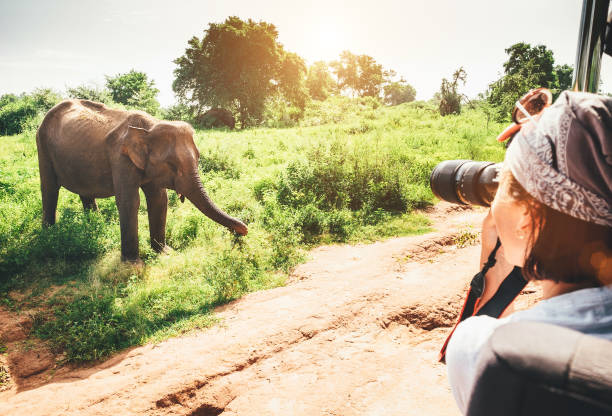

La fotografia naturalistica è un
genere fotografico che cerca di documentare la natura e le varie specie animali e/o vegetali che la
popolano. Un bravo fotografo naturalista lavora spesso da solo ed insieme alla sua macchina fotografica
cerca sempre di mostrare la bellezza intrinseca della natura.
Per chi si vuole cimentare per la prima volta nella fotografia naturalistica è essenziale seguire alcuni
passaggi, come per esempio capire come mimetizzarsi al meglio con l’ambiente circostante. Informarsi
e documentarsi con scatti e lavori di altri fotografi è senza dubbio un altro buon punto di partenza.

Se vuoi tuffarti nel mondo della fotografia naturalistica con gli animali, puoi fare tuoi questi consigli:
Per i tuoi primi tentativi, potresti recarti allo zoo o in un parco naturale. Anche i tuoi animali domestici
o quelli dei tuoi amici e conoscenti possono essere ottimi soggetti su cui esercitarsi.
In un corso di fotografia puoi imparare i trucchi degli esperti e allo stesso tempo scoprire i posti
migliori per scattare foto naturalistiche nella tua zona. Hai anche l'opportunità di fare rete con altri
fotografi amatoriali che amano immortalare gli animali.
Anche in questo caso, l'alba e il tramonto sono i momenti migliori per incontrare gli animali nella natura e
per scattare foto con una luce morbida.
Fotografa sempre gli animali all'altezza degli occhi per ottenere un effetto migliore e una prospettiva
interessante. Potrebbe anche essere necessario inginocchiarsi o sdraiarsi a terra.
Al fine di catturare i movimenti veloci degli animali, è necessario impostare la fotocamera in anticipo e
scattare così foto nitide. Puoi usare i seguenti valori per orientarti:
Apertura: per mettere a fuoco l'animale, il valore di apertura dovrebbe essere il più basso possibile.
Velocità dell'otturatore: più l'animale si muove velocemente, più bassa dovrebbe essere la velocità
dell'otturatore. Per i movimenti lenti è consigliabile un tempo di 1/200, per i movimenti veloci fino a
1/2000.
Focus: per assicurarsi che la messa a fuoco sia sugli occhi dell'animale, è consigliabile lavorare con
l'autofocus continuo (AF-C).
ISO: un valore di circa 100-200 alla luce del giorno o usare la funzione automatica
Utilizza lo scatto continuo
Soprattutto quando si è in appostamento nella natura, bisogna fare attenzione a non disturbare gli animali.
Non si dovrebbe nemmeno cercare di nutrire o attirare la fauna selvatica. Quando si fotografano animali
selvatici, bisogna avere pazienza per poter scattare la foto al momento giusto. La fatica verrà però
ricompensata da bellissime e autentiche foto di animali.
Cavalletto stabile per la fotografia nella natura:
assicurati che il tuo treppiede abbia un supporto stabile in modo da poterlo posizionare su terreni
irregolari o in acqua. Dovrebbe inoltre avere una testa a sfera, che permette di posizionare la
fotocamera con più precisione.
Con questa attrezzatura di base, sarai sicuramente in grado di scattare ottime foto della
natura. Se non sei sicuro di quale sia la macchina fotografica o l'obiettivo giusto per le tue foto,
puoi farti consigliare da un esperto in un negozio specializzato.
Foto & Natura
Una delle osservazioni che più frequentemente mi capita di ascoltare, soprattutto da parte dei fotoamatori, è quella di non riuscire a catturare (e tramutare in fotografia) la meraviglia naturale che gli si presenta davanti, sto parlando delle foto paesaggi e di come fotografare il paesaggio.
Molto spesso capita di trovarsi dinanzi a paesaggi mozzafiato che la nostra fotocamera riesce a riprodurre solo in parte. Almeno inizialmente, questo può essere un grande problema se vuoi realizzare grandi foto di paesaggi.
Devi partire dal presupposto che qualunque tipo di fotocamera, anche la più professionale, ha una resa molto inferiore a quella dell’occhio umano. Tradotto in termini spicci, molto difficilmente riuscirai a riprodurre ciò che realmente vedi.
Inizialmente questo può essere molto frustrante e spingerti a fotografare altro. In realtà, esistono stratagemmi (tecnici e compositivi) che possono aiutarti ad ottenere fantastiche foto di paesaggio.
Grazie ai consigli che ti espongo in questo articolo, infatti, potrai apprendere alcuni accorgimenti da adottare in fase di scatto. Questo ti permetterà di dare maggiore enfasi alle tue fotografie, fino ad ottenere risultati davvero professionali.
Leggendo l’articolo, inoltre, capirai come non occorra necessariamente un’attrezzatura sofisticata per realizzare grandi foto di paesaggio. Nelle varie foto di paesaggi che ho scelto come esempio, infatti, ho scelto quelle realizzate con un’attrezzatura economica.
Per conoscere i reali dati exif (se non sai cosa sono, clicca qui) e l’attrezzatura utilizzata, ti basterà cliccare sulla foto e andare nella pagina di origine.
Fare fotografie naturalistiche non significa solo
catturare panorami
mozzafiato con la macchina fotografica, ma anche mostrare la natura in tutta la sua maestosità e nelle
sue
infinite sfaccettature. Pertanto, la fotografia paesaggistica è l'hobby perfetto per te se ti piace
stare
fuori nella natura (ad esempio durante le gite in bicicletta o le escursioni) e vuoi sviluppare la tua
sensibilità per le bellezze del territorio. Con l'aiuto della tua macchina fotografica, puoi quindi
riprendere il mondo dalla tua prospettiva e lasciarti la vita quotidiana alle spalle.